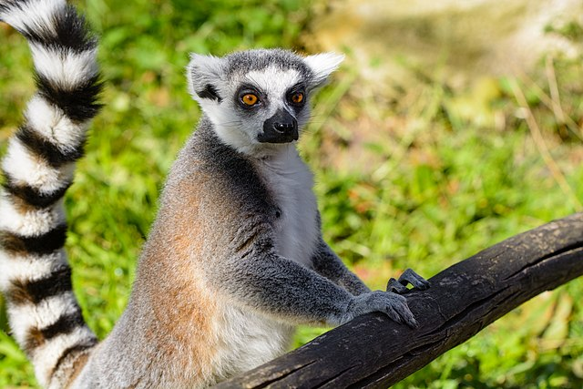
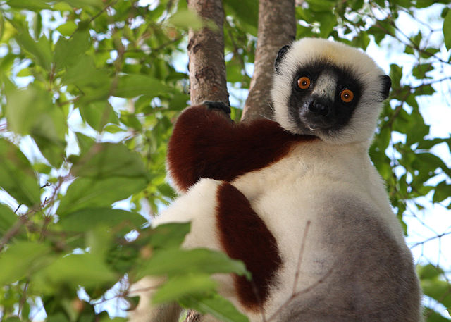
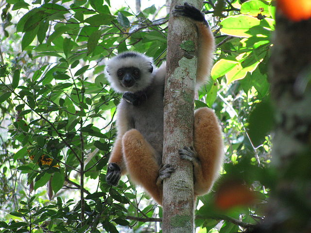

Types of Lemurs
Ring-Tailed Lemur
Ring-tailed lemurs are the most well known species, famously represented in the movie "Madagascar" by King Julian. Ring-tailed lemurs live in groups of 15-20 individuals and groups of lemurs is called conspiracies.Their distinctive stiped tails are held in the air as they walk with their conspiracy. They have a diet of berries, leaves, and small plants; they are the only lemur species to eat on both the ground and on trees. Ring-tailed lemurs are one of the more friendly species and usually ignore the presence of humans.
Aye-Aye Lemur
Aye-aye lemurs are nocternal and rarely seen. They live in trees and find bugs in tree bark to eat. They find these bugs using their highly-specialized hands. They first tap on the wood with their long nails and use echolocation to find movment. Their middle fingers are much longer than the rest of their hand and are used to reach bugs deep in the wood. They are the only primates to use echolocation and the only primates to have a sixth finger.
Sifaka Lemur
Sifaka lemurs live in the small desert region of Madagascar. This area is called the "spiny forest" because the trees and cacti in are covered in spikes. Despite this, sifaka lemurs live among the trees. They can jump up to 30 foot distances between trees and land while placing their nimble fingers between the thorns. Their legs are splayed outwards to accomplish these incredible jumps so when on the ground, they leap sideways, staying upright and using the arms and tail for balance.
Conspiracies of sifaka lemurs can often be seen in the morning sitting cross-legged. While they appear to be worshipping a sun god, they are actually warming their chests in the morning warmth. They are named for their distinct warning call they make to alert others of danger: "shif-auk, shif-auk"
Many More
There are over a hundred species of lemurs still alive on Madagarcar today. A few particularly intresting ones include the diadem lemur (pictured above) who use haunting vocalizations to communicate. They can be heard for miles over the forest canopy. There is also the dwarf lemur, their tails are longer than their bodies and used to store fat as they hibernate for up to seven months. The greater bamboo lemur, as its name suggguests, survives on a diet made entirely of bamboo! Lemurs are facinating creatures, but are endangered and populations continue to decrease. Lemur X Love is dedicated to protecting them.